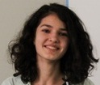
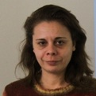
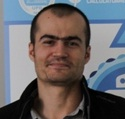
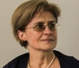

Testimonials
Alexandra Covor, student in the 10th grade at Gheorghe Lazăr HighSchool: „Py4school was really nice and interesting. Everything was explained clearly and the trainers answered all my questions. The most interesting part was The Hackathon which took place in the final course. It was then when I used all the knowledge I’ve gained during the program and, together with my team, I managed to finish a game using Python. It was a wonderful experience and I’d be thrilled to repeat it!”

Marilena Vîlciu, teacher at Lauder-Reut Highschool: „I was enthusiastic from the beginning about Py4School, but what followed had exceeded my expectations. The first important aspect that the program has done was to raise awareness about the need to promote Open Source in secondary education. Python has proven to be extremely interesting both for students and for teachers and we all learned about this very useful instrument that is similar to pseudocode.
The courses were held in a flexible way, and with the help of the trainers, we were able to expand our own field of interest in Python. Also, the teamwork with our students was helpful to understand better their working style. Python was also gladly received by the classroom (especially by the 9th graders) and, as a result, next year we are going to organize a Python Club.”

Laurențiu Lambrinoc, teacher at Lauder-Ret Highschool: „Py4school was an interesting experience, which should be diversified and repeated.
More, I think we shouldn't stop at this level and continue the approach in a possible second course on advanced topics. I've found pleasing not only the theoretical part of the program, but also the involvement of the trainers, their wilful spirit and their way of working, in which each established its own rhythm.
I would have appreciated, though, more examples and a slower approach on certain topics which were completely new for the majority of the students.
Summarizing, it would be great if such courses would take place more frequently, possibly on a wider range of topics. They are an alternative to the scholastic computer science classes”.

Constanța Năstase, teacher at Sfântul Sava Highschool: „I was familiar with the notion of Python from some of my former students who are now studying abroad. They explained to me how friendly and similar to algorithms Python is, so I was enthusiastic to learn this language together with my passionate students from Sfântul Sava.The language is very close to the pseudocode, so it can be easily used by those who are in rookie computer science class like 9th grade. It's also very flexible and has many features for implementing graphic and motion elements.
The program was sustained and developed by a group of well-prepared young trainers, who had an interactive way of teaching. They presented structured content; more, the requirements of building applications using Python were coordinated in such way that we learned new notions and solutions.”
The work platform was very useful, it had a lot of scientific notions, many resolved problems and many bibliographic references.
The students were especially motivated by the project-building stage of the program and they worked in teams in order to achieve the goal. Their work was closely coordinated by the young trainers and some of them (my students included) are still working to improve the submitted project.
Also, the students from my class who didn't attend the program were really excited when I showed them this new programming language, so I decided to organize a Python Club after 15th of March. I'll get help from the students who participated with me in this wonderful program.”
Camelia Obreja, teacher at Gheorghe Lazăr Highschool: „As we expected, the courses on Python were very interesting and task-orientated. I greatly appreciated the work atmosphere, the support that we received from the trainers and the fact that I could work both independently and in a team. I received prompt response to the questions and misunderstandings that I had.
More, the trainers gave me suggestions on how to discover new notions on python by myself. Really helpful were also the online materials that were given to us at the beginning of every course.
From teaching perspective, things were very well presented, well organized and the effort was dosed properly throughout the course. Also, the lessons were structered in such a way that the effort would increase gradually.
A special event for everybody was the last meeting, in which the teams worked on different projects and presented the results in front of their colleagues. In april we'll organize an event about Python in which students who participated in this program will present what they've learned to their colleagues.”
Silviu Săcuiu, teacher at Mihai Viteazul Highschool: „Py4School was welcomed in the context of which they are not enough hours of programming for those who are passionate about alghoritms and solving problems. The fact that our students were teached by trainers close their age with the same passions (computer science and programming) opened up new horizons for them. It was engaging the fact that they learned a new programming language very different from C++ or Pascal. Also interesting for them was object-orientated programming.”